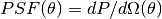
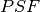
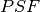
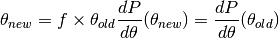
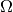
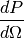
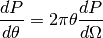

TablePSF¶
- class gammapy.irf.TablePSF(offset, dp_domega, spline_kwargs={'s': 0, 'k': 1})[source]¶
Bases: object
Radially-symmetric table PSF.
This PSF represents a  spline interpolation curve for a given set of offset
 and  points.
and  points.Uses scipy.interpolate.UnivariateSpline.
Parameters: offset : Angle
Offset angle array
dp_domega : Quantity
PSF value array
spline_kwargs : dict
Keyword arguments passed to UnivariateSpline
Notes
- This PSF class works well for model PSFs of arbitrary shape (represented by a table), but might give unstable results if the PSF has noise. E.g. if dp_domega was estimated from histograms of real or simulated event data with finite statistics, it will have noise and it is your responsibility to check that the interpolating spline is reasonable.
- To customize the spline, pass keyword arguments to UnivariateSpline in spline_kwargs. E.g. passing dict(k=1) changes from the default cubic to linear interpolation.
- TODO: evaluate spline for (log(offset), log(PSF)) for numerical stability?
- TODO: merge morphology.theta class functionality with this class.
- TODO: add FITS I/O methods
- TODO: add normalize argument to __init__ with default True?
- TODO: __call__ doesn’t show up in the html API docs, but it should: https://github.com/astropy/astropy/pull/2135
Methods Summary
__call__(lon, lat) Evaluate PSF at a 2D position. broaden(factor[, normalize]) Broaden PSF by scaling the offset array. containment_radius(fraction) Containment radius. eval(offset[, quantity]) Evaluate PSF. from_shape(shape, width, offset) Make TablePSF objects with commonly used shapes. info() Print basic info. integral([offset_min, offset_max]) Compute PSF integral, aka containment fraction. kernel(pixel_size[, offset_max, normalize, ...]) Make a 2-dimensional kernel image. normalize() Normalize PSF to unit integral. plot_psf_vs_theta([quantity]) Plot PSF vs offset. Methods Documentation
- __call__(lon, lat)[source]¶
Evaluate PSF at a 2D position.
The PSF is centered on (0, 0).
Parameters: lon, lat : Angle
Longitude / latitude position
Returns: psf_value : Quantity
PSF value
- broaden(factor, normalize=True)[source]¶
Broaden PSF by scaling the offset array.
For a broadening factor
 and the offset
array , the offset array scaled
in the following way:
and the offset
array , the offset array scaled
in the following way:
Parameters: factor : float
Broadening factor
normalize : bool
Normalize PSF after broadening
- containment_radius(fraction)[source]¶
Containment radius.
Parameters: fraction : array_like
Containment fraction (range 0 .. 1)
Returns: radius : Angle
Containment radius angle
- eval(offset, quantity='dp_domega')[source]¶
Evaluate PSF.
The following PSF quantities are available:
‘dp_domega’: PDF per 2-dim solid angle  in sr^-1

‘dp_dtheta’: PDF per 1-dim offset
in radian^-1
Parameters: offset : Angle
Offset angle
quantity : {‘dp_domega’, ‘dp_dtheta’}
Which PSF quantity?
Returns: psf_value : Quantity
PSF value
- static from_shape(shape, width, offset)[source]¶
Make TablePSF objects with commonly used shapes.
This function is mostly useful for examples and testing.
Parameters: shape : {‘disk’, ‘gauss’}
PSF shape.
width : Angle
PSF width angle (radius for disk, sigma for Gauss).
offset : Angle
Offset angle
Returns: psf : TablePSF
Table PSF
Examples
>>> import numpy as np >>> from astropy.coordinates import Angle >>> from gammapy.irf import make_table_psf >>> make_table_psf(shape='gauss', width=Angle(0.2, 'degree'), ... offset=Angle(np.linspace(0, 0.7, 100), 'degree'))
- integral(offset_min=None, offset_max=None)[source]¶
Compute PSF integral, aka containment fraction.
Parameters: offset_min, offset_max : Angle
Offset angle range
Returns: integral : float
PSF integral
- kernel(pixel_size, offset_max=None, normalize=True, discretize_model_kwargs={'factor': 10})[source]¶
Make a 2-dimensional kernel image.
The kernel image is evaluated on a cartesian grid with pixel_size spacing, not on the sphere.
Calls astropy.convolution.discretize_model, allowing for accurate discretization.
Parameters: pixel_size : Angle
Kernel pixel size
discretize_model_kwargs : dict
Keyword arguments passed to astropy.convolution.discretize_model
Returns: kernel : Quantity
Kernel 2D image of Quantities
Notes
- In the future, astropy.modeling.Fittable2DModel and astropy.convolution.Model2DKernel could be used to construct the kernel.